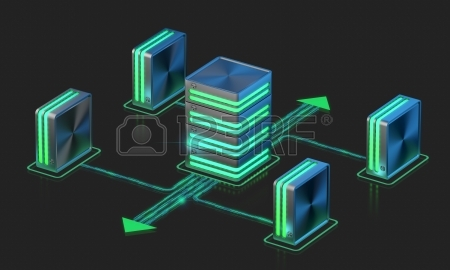
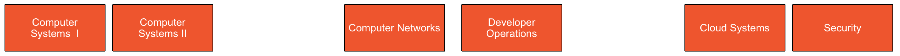
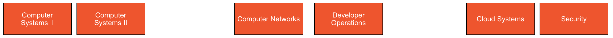

Networks
 The network, its configuration, management, and evolution, is at the heart of the IoT. Whether fixed, wireless, ad-hoc, sensor based, or hybrid, intelligent services and applications will derive much of their power from their participation in a secure and robust network. In this context, identity, privacy and trust are inherently bound into the hardware and software systems, which will embody key security principles in their operation and management. Given the magnitude and diversity of devices, network infrastructure automation and programmable infrastructure (a.k.a. infrastructure as code) are critical components of the IoT.
The network, its configuration, management, and evolution, is at the heart of the IoT. Whether fixed, wireless, ad-hoc, sensor based, or hybrid, intelligent services and applications will derive much of their power from their participation in a secure and robust network. In this context, identity, privacy and trust are inherently bound into the hardware and software systems, which will embody key security principles in their operation and management. Given the magnitude and diversity of devices, network infrastructure automation and programmable infrastructure (a.k.a. infrastructure as code) are critical components of the IoT.
Networks Learning Path

The Networks & Cloud strand will begin with an introduction to Computer Architecture and Operating Systems in the first year. A practical approach to building and configuring systems, using single board computers such as the Raspberry Pi and Intel NUC, will be central to the student’s learning environment. In the second year a more in depth coverage of networking is provided examining addressing, routing and networking protocols. Third year will see students explore the emerging area of DevOps and engage in the configuration, deployment and management of Cloud infrastructures. In the final year students will continue to work with Cloud Infrastructure technologies as well as taking a detailed look at device, system and network security.
 Department of Computing & Mathematics
Department of Computing & Mathematics
 
